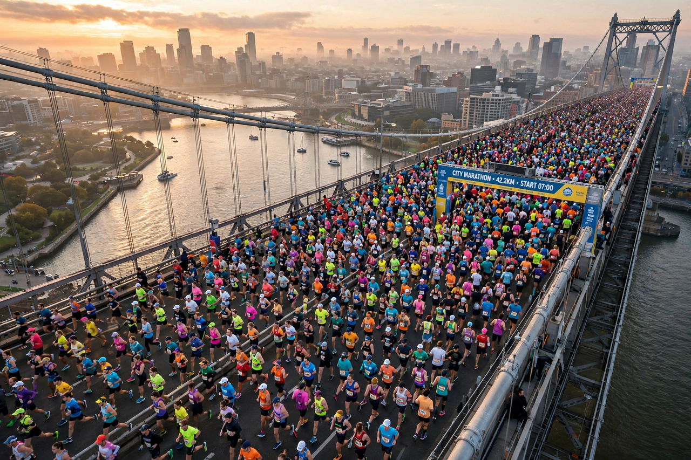

Marathon
| Marathon | |
|---|---|
| Distance | 42.195 km (26 miles 385 yards) |
| Origin | First run at the Athens Olympics, 1896 |
| Inspiration | The legend of Pheidippides, messenger of the Battle of Marathon (490 BC) |
| World best (men) | Kelvin Kiptum, 2:00:35 (Chicago, 2023) |
A marathon is a long-distance foot race with a distance of 42.195 kilometres (about 26.2 miles), usually run as a road race. The event was instituted in commemoration of the fabled run of the Greek soldier Pheidippides, who — according to legend — ran from the Battle of Marathon to Athens to report victory, then collapsed and died. The marathon was one of the original modern Olympic events in 1896. The distance was standardised at 42.195 km in 1921; it had been fixed informally by the 1908 London Olympics course, run from Windsor Castle to the White City stadium.

History
The first Olympic marathon, in Athens in 1896, was won by Spyridon Louis, a Greek water carrier, who became a national hero. The women's marathon was added to the Olympics only in 1984, won by Joan Benoit. Big-city races — Boston (first run in 1897, the world's oldest annual marathon), New York, London, Berlin, Chicago and Tokyo — now anchor the World Marathon Majors series, alongside races in every continent.
Records and the two-hour barrier
Elite performances improved steadily through the 20th century. Kenya's Kelvin Kiptum set the official men's world record of 2:00:35 in Chicago in October 2023; Kiptum died in a car crash in February 2024. In 2019 Eliud Kipchoge ran 1:59:40 in a special exhibition event in Vienna with rotating pacemakers and other aids, a landmark performance that did not count as an official record. The women's world record has been brought down to about 2:10 in recent years (Ruth Chepngetich, Chicago 2024 — recorded here with moderate confidence).
Training and physiology
Recreational runners typically train for several months, building to peak weekly volumes far beyond most people's exercise, with long runs of 30 km or more. Marathon running heavily depletes muscle glycogen; runners speak of "hitting the wall" around 30–35 km when stores run out. Hydration, carbohydrate intake and pacing strategy are central to performance, and heat is a major risk factor for collapse.